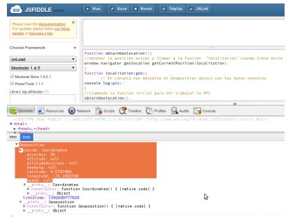

FORMULARIO WEB
Un formulario web dentro de una página web permite al usuario introducir datos los cuales son enviados a un servidor para ser procesados. Los formularios web se parecen a los formularios de papel porque los internautas llenan dichos formularios usando casillas de selección, botones de opción, o campos de texto. Por ejemplo, los formularios web pueden ser usados para introducir datos de envío con el objetivo de solicitar un producto, o bien ser utilizados para solicitar datos (p. ej., al buscar en un motor de búsqueda).
Además de servir como plantillas para nueva información, los formularios web también pueden ser usados para consultar y mostrar información existente en forma similar a los formularios de combinación de correspondencia, incorporando las mismas ventajas. La separación entre la estructura y los datos subyacentes de un mensaje permite a ambos variar independientemente. El uso de formularios webs para este propósito evita los problemas asociados con la creación explícita de páginas web separadas para cada registro en una base de datos.
Los formularios web están definidos en lenguajes de programación como HTML, Perl, Java o .NET. Las implementaciones de estos lenguajes usualmente invocan automáticamente los idiomas de la interfaz de usuario y otras de sus características, tales como el diseño estructural, y tema, minimizando el tiempo, el costo y el tiempo de programación.
NUEVOS ELEMENTOS HTML5
HTML5 ofrece nuevos elementos para una mejor estructura:
Etiqueta
Descripción
<header>
Define el header para un documento o una sección.
<hgroup>
Agrupa los elementos para el encabezado.
<nav>
Define los enlaces de navegación en un documento.
<section>
Define una sección en el documento.
<main>
Define el contenido principal del documento.
<article>
Define un artículo del documento.
<aside>
Define contenido secundario de la página.
<footer>
Define el pie del documento o sección.
<details>
Define detalles adicionales que el usuario puede ver o esconder.
<summary>
Define un encabezado visible para un elemento <details>.
<figure>
Define un contenido independiente, como una ilustración, diagrama, foto, etc.
<figcaption>
Define una título para un elemento <figure>.
<mark>
Define texto resaltado o marcado.
<time>
Define una fecha/hora.
<bdi>
Define una parte del texto que puede ser formateada de una manera diferente a la del texto principal.
<wbr>
Define un posible retorno de carro.
<dialog>
Define una caja de diálogo o ventana
<command>
Define un botón de comando al que el usuario puede llamar
<meter>
Define una medida escalar dentro de un rango establecido.
<progress>
Define el progreso de una tarea.
<ruby>
Define una anotación ruby (para tipografía del este asiático) .
<rt>
Define una pronunciación de caracteres (para tipografía del este asiático)
<rp>
Define lo que se puede mostrar en los navegadores que no soporta las anotaciones ruby.
Nuevos elementos Form
<datalist>
Define opciones predefinidas para una caja de texto input.
<keygen>
Define un campo generador de palabras clave(para envío de claves a traves de formularios)
<output>
Define el resultado de un cálculo
El nuevo elemento <canvas>
<canvas>
Define dibujos gráficos utilizando JavaScript
Nuevos Elementos Media
<audio>
Define contenido de sonido o música
<video>
Define contenido de video o smovie
<source>
Define fuentes para <video> y <audio>
<track>
Defines rutas para <video> y <audio>
<embed>
Define containers para aplicaciones externas (como plug-ins)
Elementos eliminados
Los siguientes elementos de HTML 4.01 han sido eliminados de HTML5:
· <acronym>
· <applet>
· <basefont>
· <big>
· <center>
· <dir>
· <font>
· <frame>
· <frameset>
· <noframes>
· <strike>
· <tt>
INTRODUCCION A LOS API´s
¿Qué son las APIs?
Las Interfaces de Programacion de Aplicaciones (APIs por sus siglas en inglés) son construcciones disponibles en los lenguajes de programación que permiten a los desarrolladores crear funcionalidades complejas de una manera simple. Estas abstraen el código más complejo para proveer una sintaxis más fácil de usar en su lugar.
Como ejemplo, piensa en el suministro de electricidad de tu casa, apartamento, o cualquier otro edificio. Si quieres usar un electrodoméstico, simplemente lo conectas en un enchufe y funciona. No intentas conectarlo directamente a la fuente de alimentación — hacerlo sería muy ineficiente y, si no eres electricista, dificil y peligroso.
De la misma manera, si quisieras programar gráficos 3D, sería mucho más facil hacerlo usando una API escrita en un lenguaje de alto nivel como JavaScript o Python, en lugar de intentar escribir código de bajo nivel (por ejemplo: C o C++) que controle directamente la GPU del equipo u otras funciones gráficas.
La interfaz Geolocalización representa un objeto capaz de obtener mediante programación la posición del dispositivo. Se da acceso Web de la ubicación del dispositivo. Esto permite a un sitio Web o aplicación ofrecer resultados personalizados basados en la ubicación del usuario. La API define tres métodos: getCurrentPosition(): Recupera la posición actual y se ejecuta una sola vez. watchPosition(): Recupera y actualiza la posición actual a medida que cambia de posición. clearWatch(): Detiene la actualización de una vista (Watch) de posición.  Lo que hace esta pequeña porción de código es intentar obtener la posible ubicación y después llama la función localitation(). La consulta de ubicación se realiza de forma asincrónica para que otros procesos puedan seguir funcionando en la página, esto es para tener en cuenta para cuando se realice un despliegue de aplicaciones. Se ven una cantidad de datos interesantes pues el Geolocation object contiene una propiedad timestamp y otra llamada coordinates. Hablando un poco de algunas propiedades interesantes que arroja el objeto coordinates; puede contener valores nulos, lo que significa que no debemos asustarnos ya que esto funciona según las capacidades del hardware donde lo visualiza: latitude (latitud): La posición norte-sur sobre la tierra. longitude (Longitud): La posición de occidente a oriente sobre la tierra. altitude (altitud): La altura de la posición, solo si el dispositivo de visualización tiene la capacidad de medir la altitud. accuracy (exactitud): Precisión de las alturas, exactitud, que es medida en metros. heading: Dirección y recorrido, medida en grados alrededor de un círculo. speed (velocidad): La velocidad de desplazamiento en una partida determinada en metros por segundo.
Al ejecutar secuencias de comandos en una página HTML, la página deja de responder hasta que finaliza la secuencia de comandos. Un trabajador web es un JavaScript que se ejecuta en segundo plano, independientemente de otros scripts, sin afectar el rendimiento de la página. Puede continuar haciendo lo que quiera: hacer clic, seleccionar cosas, etc., mientras el trabajador web se ejecuta en segundo plano. Un worker es un objeto que se crea a través del constructor ( Worker()) este ejecuta un archivo javascript — este fichero contiene los scripts que se van a ejecutan en el hilo del worker; los workers se ejecutan en un contexto global diferente al actual del navegador window. Este contexto está representado por el objeto DedicatedWorkerGlobalScope en el caso de los workers dedicados (los workers standard utilizan un solo script; y los shared workers usan SharedWorkerGlobalScope).
Toda web consta de una serie de contenidos: texto, imágenes, vídeos, bases de datos y demás. Tales contenidos deben ser almacenados en algún lugar, de manera que los navegantes puedan acceder a ellos a través de Internet y visualizar las correspondientes páginas. El almacenaje con posibilidad de acceso a esos contenidos es lo que se conoce como alojamiento web o hosting.
CSS3 es una tecnología que ha tenido una evolución en el tiempo, que actualmente se encuentra en su versión 3, como su propio nombre indica. Sus siglas corresponden a “Cascading Style Sheets”, que tiene el siguiente significado: Cascading, que significa que los estilos que aplicamos a los elementos de una página web se propagan a los elementos que contiene, se propagan en cascada. Style, porque mediante CSS lo que hacemos es aplicar estilos visuales a los distintos elementos de nuestra página web. Sheets, que significa hojas, porque los estilos de una página web se añaden en ficheros aparte, en ficheros con la extensión .css de manera general. CSS es un lenguaje de diseño gráfico que permite definir y crear la presentación de un documento estructurado escrito en un lenguaje de marcado. Es muy usado para establecer el diseño visual de los documentos web e interfaces de usuario escritas en HTML.
La propiedad transform de CSS nos permite poder rotar, cambiar la escala o sesgar un elemento de una página web.Un ejemplo puede ser el girar levemente una foto dentro de una página para conseguir un efecto estéticamente muy atractivo. También podemos dar animación a las transformaciones:por ejemplo, mediante animación aplicada a la propiedad "scale" podemos conseguir un efecto de ampliación o reducción del tamaño de una imagen o de cualquier otro elemento. Podemos también añadir la propiedad "perspective" al efecto de transformación para simular la visión de un objeto en un espacio tridimensional, estático o en movimiento.
Cada vez está más extendido el soporte para añadir tipos de letra especiales a las páginas web mediante la propiedad @font-face, que permite especificar una fuente concreta y un enlace desde el cual el navegador pueda descargarla. Esta característica puede cambiar de forma radical el aspecto de las páginas web, pero lamentablemente también se ve afectada por los muchos problemas de compatibilidad con navegadores antiguos que se pueden ver en otras funcionalidades de HTML5.
Ciertas tecnologías como Flash o Silverlight se han venido utilizando hasta ahora para animar objetos dentro de las páginas web. Ahora ya podemos conseguir algunos de estos efectos utilizando las reglas y propiedades de CSS3. En el futuro, el elemento Canvas de HTML5 y las transiciones de CSS3 permitirán crear elementos animados e interactivos sobre la página. Las animaciones de CSS, y el tema siguiente, las transiciones, probablemente estarán soportadas por la mayoría de los navegadores en los próximos años. En el momento de escribir esta guía, el estándar todavía no está cerrado por lo que no está soportado en todos los navegadores, en cualquier caso puedes empezar a probar algunos ejemplos con la platform preview de Internet Explorer 10.
Difícil de responder debido a que no existe una definición única para "HTML5". Existen numerosas demos de HTML5 que no se podrían poner en entornos en producción debido al distinto grado de soporte que ofrecen los navegadores. Si se decide incorporar funciones de estilo de CSS3, hay muchos sitios web personales y de empresas que utilizan los elementos más vistosos, como border-radius o las funciones de transformación. En estos casos, los diseñadores pueden utilizar las funcionalidades y añadir alternativas adicionales para asegurarse de que la restitución de estas páginas en navegadores no compatibles no es demasiado diferente de cómo se ven en los navegadores más modernos.
Un área donde el uso de las funcionalidades de HTML5 está siendo muy activo es entre los dispositivos móviles y smartphones. En este mundo podemos encontrar aplicaciones web que aprovechan las ventajas de los nuevos tags de Video o Audio, puesto que ciertos dispositivos como Windows Phone o iPhone soportan HTML5 pero no soportan complementos como Flash o Silverlight.
Gabriel Alejandro Garza Gallegos 1800790:
Erick Francisco Villa Carrillo 1735681:
Jesús Jalil Romero Lara 1807390:
Andrés Arrazola y Meza 1884455:
Sergio Manuel Zamarrón Álvarez 1652329: